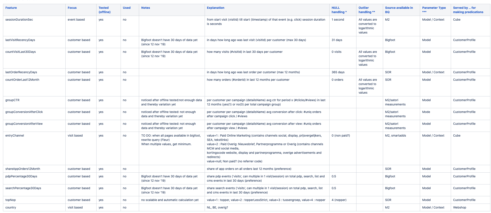
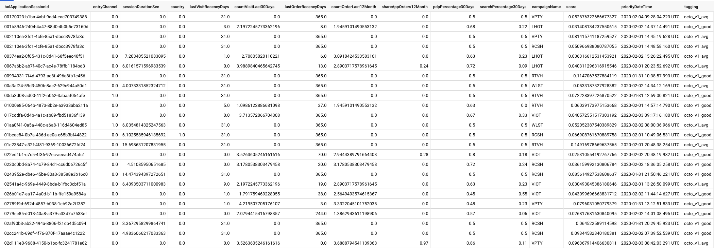
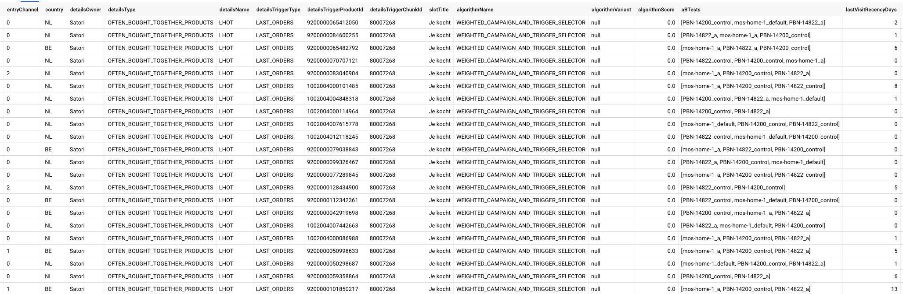

This talk is NOT about
Machine learning (ML) algorithmsDeep learning and tensorflowTechniques/tools in data scienceCloud architecture for machine learning
What is ML model?
- Statistical models which describe data
- Mathematical models which represent a real-world process
- Data models which show patterns
"Model artifact that is created by the training process"
- Amazon Machine Learning Dev. Guide
ML Lifecycle
=> Hypotheses
=> Feature engineering, KPI, and data collection if needed
=> Feature selection, model training, evaluation, and selection
=> Model deployment for inference
=> Experimentation
- Feature enginering:
- Brainstorming or testing features
- Deciding what features to create
- Creating features
- Checking how the features work with your model
- Improving your features if needed
- Go back to brainstorming/creating more features until the work is done.
- KPI: CTR, revenue, derivative construct?
- Data collection
- Feature selection: consider not all available features?
- Model training:
- Model evaluation: more data, more features, different model?
- Model selection
- Model deployment for inference
- Experiments: accept/reject null hypothesis
Feature engineering, KPI, and data collection
Lesson 1: Brainstorm with people of different roles!

Feature engineering, KPI, and data collection
Lesson 2: Don't assume data are readily available!
Lesson 3: Make sure you have access to the data you need
Feature selection, model training, evaluation, and selection
Lesson 4: Make sure features are available for both training and prediction
Lesson 5: Make sure features are aligned for both training and prediction
Lesson 6: Promote independent yet close-knit collaboration between engineers and data scientists (Nice to Have)
- Lesson 4: Collaborate well, discuss on how to get features offline for training and online for inference, and see if it's even possible
- Lesson 5: Features should have gone through the same preprocessing: same scaling, same order, etc
- Lesson 6: For instance, provide abstraction on infrastructure and orchestration complexity as much as possible
Model deployment for inference
Lesson 5: Make sure features are aligned for both training and prediction
Lesson 7: Make sure you choose performing framework for serving/inference
Lesson 8: Make sure you test thoroughly
Lesson 9: Invest on performance
- Lesson 5: Features should have gone through the same preprocessing: same scaling, same order, etc
- Lesson 7: if you pickled out your model, either you transform into Java or choose scalable python Framework: FastAPI based on asyncio. Another talk about this? packaging, deps management, etc.
- Lesson 8: Perform prediction/inference by using training, test, newly seen data, invalid data to see if it gives you a correct scale and behaviour.
- Lesson 9: Mimic real load.
Model deployment for inference
Lesson 10: Think about fallback scenario/response if somehow model is unreachable
Lesson 11: Measure everything
- Lesson 10: This is important to identify if data you're collecting during experiment is sane
- Lesson 11: Getting feedback:
- establish a request scope event identifier for each prediction and store both the features and prediction. This way you can re-evaluate your model and collate your features/prediction with other measurement e.g. slot in WSP
- track your model by tagging and propagate your tagging to your consumer also using the same identifier. Also, annotate fallback scenario, so you can distinguish them.
- if you're working with WSP: look at m2 schema and see if you can add some information to m2
Example of measurement


Example of measurement
 Experiments
You run it, you measure it, you conclude it, and ...
Lesson 12: Make sure everything is reproducible and repeatable